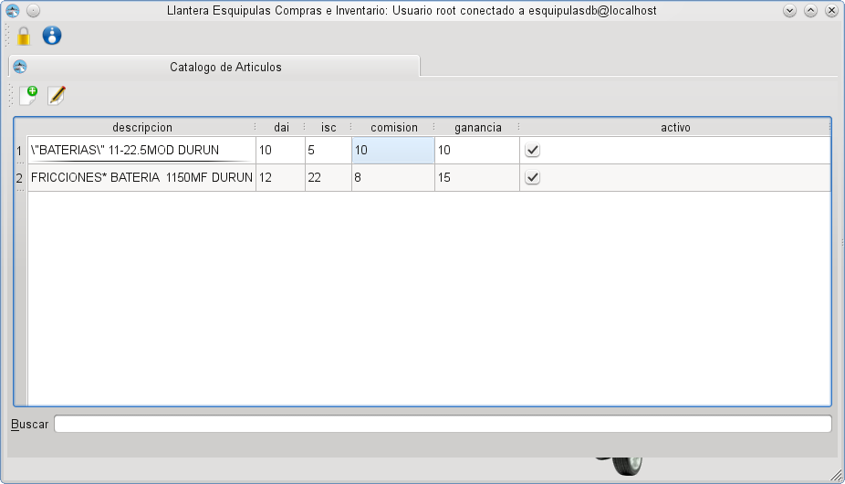
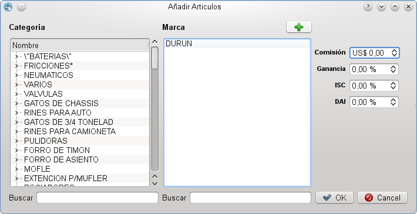

Inventario: Catalogo de Articulos
Inventario: Catalogo de Articulos
El catalogo de articulos muestra todos los articulos que han sido
registrados en el sistema juno con sus valores actuales de DAI, ISC,
comisión y ganancia, es posible buscar por cualquiera de los
campos de la tabla, modificar los campos a gusto y añadi
Catalogo de Articulos
Añadir articulo
Para añadir un nuevo articulo se debe presionar el boton (  ), este
entonces mostrara un dialogo en el que podra introducir los datos
necesarios, al igual que en la mayoria de las otras ventanas usted
podra realizar una busqueda entre los elementos del formulario mediante
un cuadro de busqueda.
), este
entonces mostrara un dialogo en el que podra introducir los datos
necesarios, al igual que en la mayoria de las otras ventanas usted
podra realizar una busqueda entre los elementos del formulario mediante
un cuadro de busqueda.
Añadir Articulo